Lecture 3: Large Language Models, Decoding, and Inference
Video blocked (ad-blocker or local file mode).
Watch on YouTubeVideo not loading? Watch on YouTube
Original lecture. LLM definition, MoE, decoding, temperature, prompting, and inference efficiency.
The problem: what does “large” mean
A language model is a next-token probability machine. At every position it computes P(x_t | x_1 … x_{t-1}): the probability of each vocabulary word given the words so far. Large means three magnitudes at once: hundreds of billions of parameters, hundreds of billions to tens of trillions of training tokens, and the engineering to serve both.
Architecturally, the field converged: over 90% of large models are decoder-only transformers. One stack, one objective (predict the next token), no encoder-decoder plumbing. The decoder-only pattern won because it is simple and it scales.
Subchapter: why decoder-only won
Three reasons, in order of importance. First, one objective scales: next-token prediction needs no labeled pairs, so every byte of text is training data. Encoder-decoder needs structured pairs. Second, one stack is simpler to scale: no cross-attention plumbing, no encoder/decoder balance to tune, pipeline parallelism maps cleanly onto a single stack. Third, generation subsumes the rest: classification and QA become “generate the answer”, so one model serves all tasks. The cost: bidirectionality. Decoder-only models read left to right, so they make worse embeddings than bidirectional encoders. The market decided generation matters more.
Subchapter: what is used where: the October 2026 lineup
| Model | Shape | Attention / sparsity | Position | Context |
|---|---|---|---|---|
| GPT-6 Astra (OpenAI) | decoder-only | closed details | unknown | unknown (not public) |
| Gemini 3.8 Flash (Google) | decoder-only | closed details | unknown | 1M (reported) |
| DeepSeek V4.1 Flash | causal encoder-decoder MoE, 552B, 8B/16B active | CSA2 (Compressed Sparse Attention 2) compressed KV cache (890 B/token, FP4) | [uncertain] | 1M |
| Llama 4 Maverick (Meta) | decoder-only MoE, 17B active, 128 experts | GQA + RoPE | RoPE | 1M |
| Claude Sonnet 5.5 (Anthropic) | decoder-only | closed details | unknown | 1M (reported) |
| Kimi K3 (Moonshot) | decoder-only MoE, 2.8T, 104B active, 896 experts (16+2 shared per token) | Kimi Delta Attention | unknown | 1M |
Kimi Delta Attention is the sparse attention mechanism named in Kimi K3’s row of the table above, the entry under the attention/sparsity column.
Two honest notes. Closed labs publish almost no architecture details: GPT-6, Gemini 3, and Claude entries above are “decoder-only by behavior”, not by disclosed design. And the open-weight rows (DeepSeek V4.1, Llama 4) are where the verifiable mechanism knowledge lives: MoE routing, GQA, RoPE, latent caches. When this course says “what is used where”, the evidence comes from the open models.
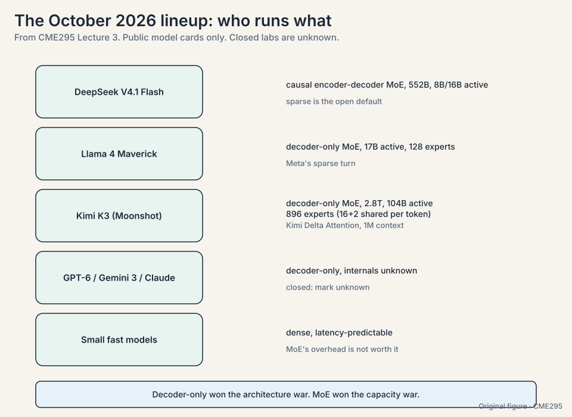
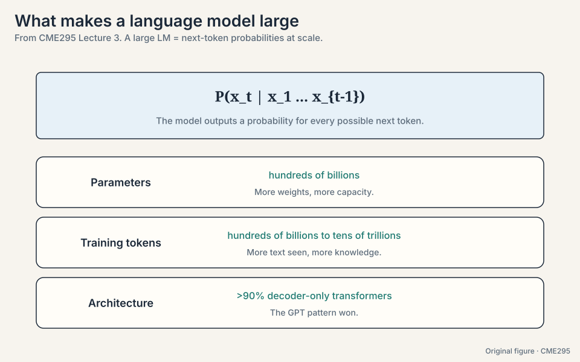
The problem: every token runs the full model
In a dense transformer, every token passes through every feed-forward network in every layer. The FFN holds roughly two thirds of the parameters. Serving millions of tokens through all of that is expensive. The lecture asks: do you need all parameters for every token?
The key question
Training buys you a probability distribution over next tokens. How do you turn that distribution into answers, and how do you serve those answers fast enough and cheap enough to use?
Mixture of experts: route tokens to specialists
The metaphor is a room of experts: route each token to the specialists it needs, and let the rest sleep. Formally, the output is a weighted sum over experts:
y-hat = sum of g_i * E_i(x)
A gating network produces weights g_i per token. Each expert E_i is a feed-forward network. In a dense MoE all experts run and the weights blend them. In a sparse MoE only the top-K (K = 1 or 2) experts run per token. Sparse is the point: capacity without proportional compute.
Watch routing on a toy. Four experts, one token, gating scores:
token "bear", gating network outputs: expert 1: 0.60 expert 2: 0.25 expert 3: 0.10 expert 4: 0.05 top-2 routing: run expert 1 and expert 2 only. output = 0.60 * E1(x) + 0.25 * E2(x) (renormalized over the chosen two) experts 3 and 4 sleep: zero compute, zero memory traffic.
Three details matter:
- Routing is per token, per layer. Each token picks its experts fresh at every layer. Tokens also scatter across GPUs, which parallelizes the expert computation.
- Routing collapse (21:16). The router discovers that one expert is good enough and sends everything there. The other experts starve. Demonstrate it: start the toy with gating [0.40, 0.30, 0.20, 0.10]. Expert 1 gets 40% of the training signal, so it improves fastest. Next round its gating rises to 0.55, it gets more signal, it improves further. The loop converges to [1.00, 0, 0, 0]: you paid for four experts and use one. Fixes: an auxiliary load-balancing loss plus noisy gating, so the router keeps exploring.
- Switch Transformer (28:34). The recommended read: top-1 routing pushed to about 1.6 trillion parameters. It proved sparse models scale.
Subchapter: the gating math, written out
The gating network is a linear layer plus softmax over experts: g = softmax(W_g x). On the toy: W_g x gives logits [2.0, 1.0, 0.0, -1.0]. Softmax: exp = [7.39, 2.72, 1.0, 0.37], total 11.48. g = [0.64, 0.24, 0.09, 0.03]. Top-2 keeps experts 1 and 2. Renormalize over the chosen: 0.64/(0.64+0.24) = 0.73, 0.24/0.88 = 0.27. Output = 0.73 * E1(x) + 0.27 * E2(x). Experts 3 and 4 never run. The renormalization matters: without it, the dropped experts’ weight would leak out of the sum and the scale would drift.
Subchapter: expert parallelism and the all-to-all
Tokens scatter across GPUs by expert assignment. GPU 0 holds experts 1-2, GPU 1 holds experts 3-4. A token routed to expert 3 must travel to GPU 1, get processed, and return. That exchange is an all-to-all communication: every GPU sends tokens to every other GPU. At 256 experts across 64 GPUs, the all-to-all is the dominant cost of the MoE layer, often bigger than the expert compute itself. Two consequences: experts are sized to fill GPUs evenly, and capacity limits (max tokens per expert per batch) prevent one expert from drowning its GPU. Overflow tokens skip the expert: a correctness tradeoff for throughput.
Subchapter: MoE in production, October 2026
Sparse MoE is the default for open frontier models. DeepSeek V4.1 Flash: 552B total, 8B active on input, 16B on output. Llama 4 Maverick: 17B active over 128 experts. Kimi K3: 2.8T total, 104B active over 896 experts (16+2 shared per token), per the lineup table above. The pattern: total parameters measure capacity, active parameters measure cost. The interview line: “MoE decouples the two.” Dense models are the exception now, kept where latency predictability beats capacity (small fast models) or where the lab never published the design (the closed labs).
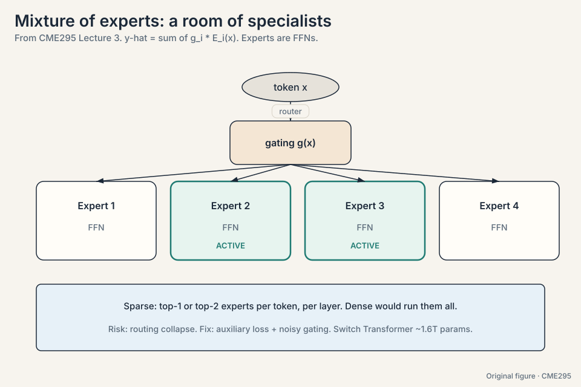
The FFN holds most of a transformer’s parameters (roughly two thirds), so sparsifying it saves the most compute. Attention is comparatively cheap and benefits from seeing the full context, so it stays dense. You paid for N experts and use one. Capacity is wasted, and the single active expert becomes a bottleneck that every token queues through. The auxiliary loss exists to keep the router honest.
The problem: the model outputs probabilities, not tokens
The model’s output at each step is a distribution over the whole vocabulary: 50,000 numbers summing to 1. Decoding turns that distribution into a token. Five strategies cover the space. Watch all five on one toy distribution:
vocabulary: "lit" 0.50, "read" 0.30, "slept" 0.12, "ate" 0.08
- Greedy. Take the argmax: “lit”. Fast, deterministic, and prone to dull loops: the most likely token at every step is rarely the best sequence.
- Beam search (41:36). Keep B hypotheses alive. With B = 2, extend “lit” and “read”, keep the two best by summed log-probability, extend again. Length normalization divides by a length factor, because log-probabilities are negative: without it, a 3-token sequence summing to -2.1 always loses to a 2-token sequence summing to -1.8, regardless of quality. Better quality, B times the cost.
- Sampling. Draw from the distribution. On the toy, “lit” 50% of the time, “read” 30%, “slept” 12%, “ate” 8%. Diverse, occasionally surprising. The only randomness in the whole transformer lives here.
- Top-K. Sample from the K most likely tokens only. With K = 2, renormalize over “lit” (0.50) and “read” (0.30): 0.625 and 0.375. “slept” and “ate” get zero. Cuts the weird tail.
- Top-P (nucleus). Sample from the smallest set whose cumulative probability reaches P. With P = 0.9: “lit” + “read” = 0.80, not enough. Add “slept” = 0.92, enough. The set is {lit, read, slept}. It adapts automatically: sharp distributions give small sets, flat distributions give large ones.
Subchapter: beam search, worked by hand
Beam width B = 2 on the toy. Step 1: candidates “lit” (log prob, natural log, log 0.5 = -0.69) and “read” (log 0.3 = -1.20). Keep both. Step 2: extend “lit” with its top two next tokens, say “well” (log -0.5) and “again” (log -1.0). Extend “read” with “books” (log -0.4) and “more” (log -0.9). Four hypotheses, scores: lit+well = -1.19, lit+again = -1.69, read+books = -1.60, read+more = -2.10. Keep the two best: “lit well” (-1.19) and “read books” (-1.60). Extend again. Length normalization divides each score by (length^alpha), alpha ~ 0.6-1.0: without it, the 2-token hypotheses always beat 3-token ones because every log prob is negative.
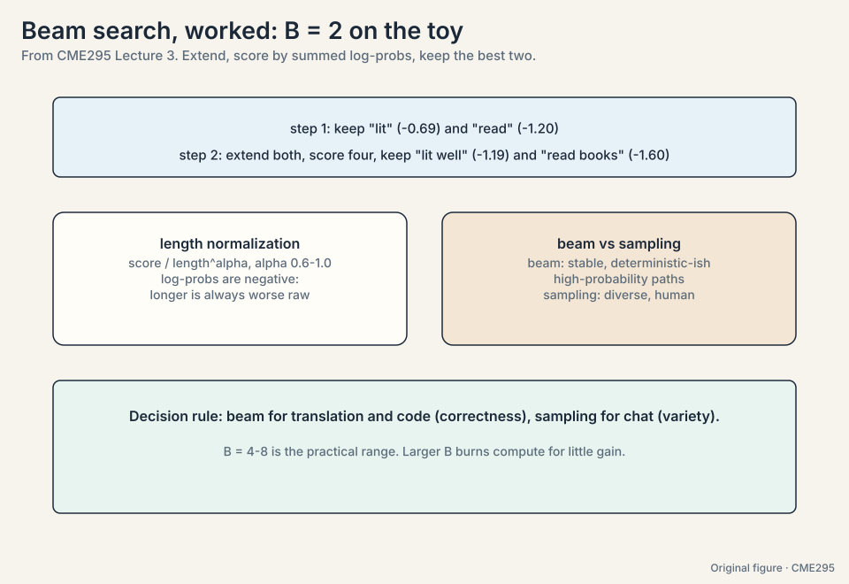
Subchapter: top-K vs top-P on the same distribution
On the toy (lit 0.50, read 0.30, slept 0.12, ate 0.08): top-K with K = 2 fixes the set at {lit, read} regardless of shape. Top-P with P = 0.9 gives {lit, read, slept}: it adapts. Now sharpen the distribution (lit 0.95, rest 0.05): top-K still gives 2 tokens, top-P gives {lit} alone. Top-P is the better default because it follows the distribution’s entropy. Top-K survives as a guardrail: it caps the set when the distribution goes flat and top-P would admit hundreds of junk tokens. Production default: top-P ~ 0.9-0.95 with a top-K cap of a few hundred. The decision rule: sample with top-P when you want quality, top-K cap when you fear the tail.
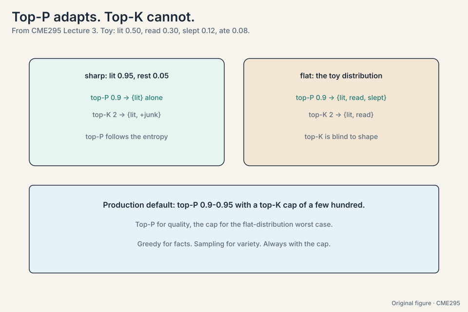
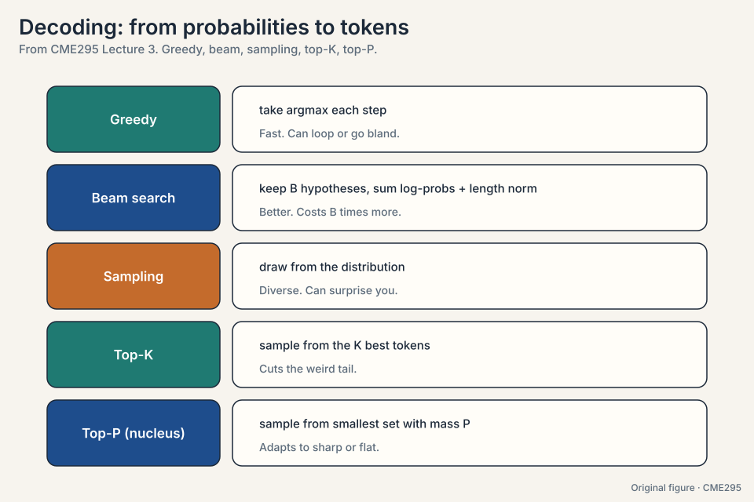
Temperature reshapes the distribution
Temperature T reshapes the softmax: p_i is proportional to exp(z_i / T) (52:42). Watch it on toy logits z = [3, 2, 1]:
T = 0.5: exp([6, 4, 2]) = [403, 55, 7] -> [0.87, 0.12, 0.02] (spiky) T = 1.0: exp([3, 2, 1]) = [20.1, 7.4, 2.7] -> [0.67, 0.24, 0.09] (trained) T = 2.0: exp([1.5, 1, 0.5]) = [4.5, 2.7, 1.6] -> [0.51, 0.31, 0.19] (flatter) T -> inf: -> [0.33, 0.33, 0.33] (uniform noise)
As T approaches 0, the argmax takes everything and outputs turn deterministic. At T = 1 you get the trained distribution. As T grows large, the distribution flattens toward uniform.
Two subtleties the lecture stresses. First, nothing in the transformer is probabilistic except the sampling step. The model is a deterministic function of its input. Randomness enters only when you sample. Second, T = 0 is deterministic in theory but not always in practice: GPU floating-point nondeterminism can still change outputs between runs.
Subchapter: the softmax with temperature, derived
Start from logits z = [3, 2, 1]. The softmax with temperature T is p_i = exp(z_i / T) / sum(exp(z_j / T)). At T = 1: the trained distribution [0.67, 0.24, 0.09]. Divide by T = 0.5 first: z/T = [6, 4, 2], exp = [403, 55, 7], p = [0.87, 0.12, 0.02]. The gaps widened: exp amplifies differences. Divide by T = 2: z/T = [1.5, 1, 0.5], exp = [4.5, 2.7, 1.6], p = [0.51, 0.31, 0.19]. The gaps shrank. Temperature is a gap amplifier (T < 1) or gap flattener (T > 1). It never changes the ranking: argmax is temperature-proof.
Subchapter: why T = 0 is not deterministic on GPUs
T = 0 means argmax: pick the highest logit. Deterministic on paper. On GPUs, floating-point addition is not associative: (a + b) + c differs from a + (b + c) in the last bits. Parallel reductions sum logits in orders that vary with thread scheduling. Two runs can produce logits that differ by 1e-7. If the top two logits are within 1e-7 of each other, the argmax flips. Rare, but real: close calls flip, ties flip. For reproducible evals, fix the seed, fix the hardware, and accept that “deterministic” has an asterisk.
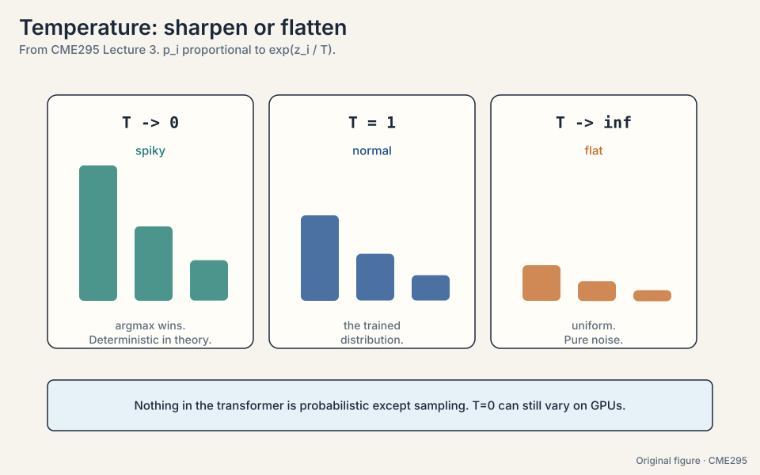
Top-P at 0.9-0.95, with a top-K cap of a few hundred. Top-P adapts to the distribution’s entropy: sharp distributions get small sets, flat ones get large ones. Top-K alone is blind to shape: K = 50 on a sharp distribution admits 49 junk tokens. The cap handles the reverse failure: on a flat distribution top-P would admit hundreds of tokens, so the cap bounds the worst case. Greedy for facts, sampling for variety, always with the cap. Nothing mechanically: the set is the whole vocabulary, so it is plain sampling. The failure is quality: the tail contains thousands of near-zero-probability tokens that occasionally get drawn. One weird token can derail a whole response.
When there is one right answer: math, code, factual lookup. Sampling adds variance you do not want. Use sampling (with temperature) when you want variety: brainstorming, dialogue, creative writing. Log-probabilities are negative, so longer sequences sum to more negative totals. Without normalization the search prefers short sequences regardless of quality. Dividing by a length penalty levels the field.
The problem: sometimes the output must parse
A JSON API call, a form, a code skeleton: free text is not acceptable. Guided decoding (65:12) constrains sampling to tokens the grammar allows. Model the valid outputs as a finite state machine or grammar (66:48). At each step, mask every token that would break the grammar and renormalize over the rest.
The toy: the schema expects an opening brace. The model proposes “lit” 0.50, “read” 0.30, “{” 0.12, “ate” 0.08. Mask the invalid three, renormalize: “{” gets 1.0. The output always parses because invalid tokens had zero probability.
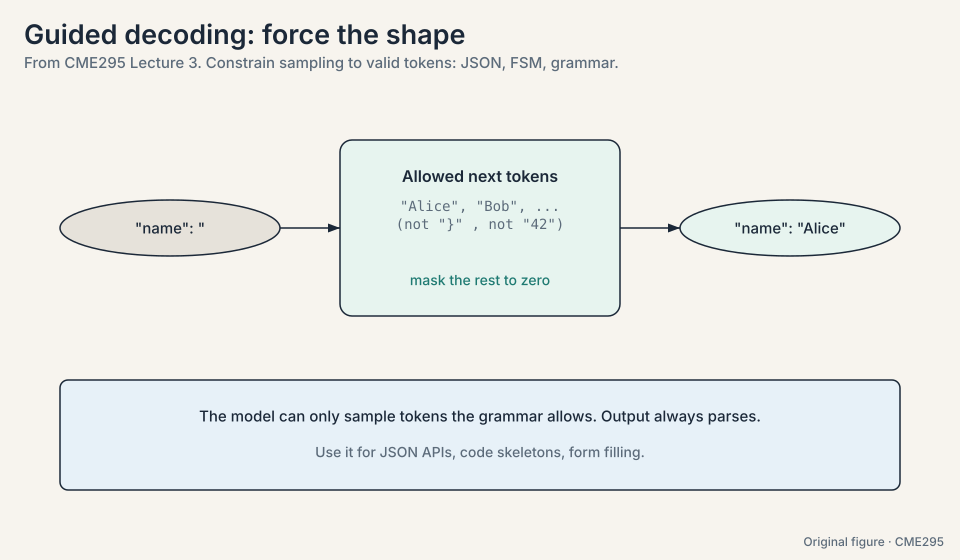
Subchapter: the grammar as a finite state machine
Model the JSON schema as states and transitions. States: expect-key,
expect-colon, expect-value, expect-comma-or-close. At each state,
only some tokens are legal: in expect-key, only " starts a key.
The mask zeroes everything else before sampling. The FSM advances
on each emitted token. Two failure modes. First, the model can
paint itself into a corner: legal tokens at step t can still lead
to a state with no legal continuation at step t+5. Good
implementations backtrack or constrain lookahead. Second, the
grammar cannot fix semantics: {"temp": 9999} parses and is
nonsense. Guided decoding guarantees syntax, never sense.
A 70B target and a 4B draft. The draft generates k = 3 tokens fast: “the bear is”. The target runs one forward pass over the prefix plus the 3 drafts, computing its own probabilities at each position. Accept tokens left to right while the target agrees: it accepts “the” and “bear”, rejects “is”. Keep the accepted prefix, resample the rejected position from the target’s distribution, continue. Cost: 2 memory moves (draft + verify) produced 3 tokens instead of 3 moves. The output distribution is exactly the target’s: the acceptance rule corrects for the draft’s bias. Speedup follows the acceptance rate. Two cases. The draft disagrees too often (acceptance rate collapses, verification is wasted). Or batches are large: with many requests the GPU is compute-bound, not memory-bound, and the extra draft compute costs more than the saved memory moves. Speculative decoding is a latency trick for small batches.
The problem: steer the model without retraining
Retraining is expensive. Prompting steers behavior with text alone. A prompt has an anatomy: context (background facts), instructions (what to do), inputs (the data), constraints (format, length, tone). Getting each part right is most of applied LLM work.
The technique ladder, on one running task (“classify this review”):
- Zero-shot (74:59). No examples. “Classify: This teddy bear is SO CUTE!” Works when the instruction alone suffices.
- Few-shot. A few input-output examples in context. Shows the pattern to copy: format, style, edge cases.
- Chain-of-thought (78:50). Ask the model to reason step by step before answering. More tokens means more compute spent on the problem, and intermediate steps catch errors early.
- Self-consistency (82:16). Sample N reasoning paths, take the majority answer. The toy: N = 5 paths give answers [A, B, A, A, C]. Majority: A, with 3 of 5 votes. Independent noise cancels. The modal answer is usually the careful one.
Two warnings come with scale. Context windows reach hundreds of thousands of tokens, but stuffing them hurts: irrelevant context degrades performance, a phenomenon the lecture calls context rot (69:09), citing a needle-in-a-haystack paper from summer 2025 [uncertain: paper not named in the transcript]. And repeated prompt prefixes can be cached: prompt caching computes the shared prefix once and reuses it, cutting cost and latency for repeated scaffolding.
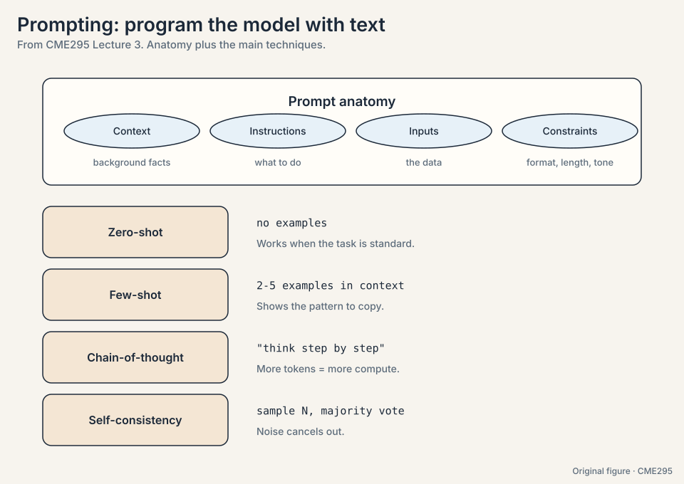
Subchapter: chain-of-thought token economics
CoT trades tokens for accuracy. The toy: a math problem answered directly costs 50 output tokens. With CoT it costs 50 reasoning tokens plus 50 answer tokens: 2x the tokens, billed at output rates. The lecture’s claim: more tokens means more compute spent on the problem, and intermediate steps catch errors. The economics: CoT is worth it when the accuracy gain beats the 2-10x token multiplier. For easy questions it is pure waste: the model writes a chain it did not need. Production systems route: easy questions skip CoT, hard ones use it (Lecture 6’s dynamic budgets). The interview line: “CoT converts a hard one-shot problem into easy multi-shot problems, priced per token.”
Subchapter: self-consistency majority math
Sample N = 5 reasoning paths: answers [A, B, A, A, C]. Majority: A with 3 of 5. Why it works: each path’s error is roughly independent, so the modal answer concentrates on the careful reasoning while noise spreads across options. The math is the Condorcet intuition: if each path is right with probability 0.6 independently, the majority of 5 is right with probability ~0.68. It fails when errors correlate: if all 5 paths share the same misreading of the question, the majority is confidently wrong. Cost: 5x the tokens of one path. Use it where answers are checkable or stakes are high.
From two constraints. Memory: experts must fit the GPUs you own (DeepSeek V4.1: 552B total across its fleet. Llama 4 Maverick: 128 experts). Communication: the all-to-all cost grows with expert count, so more experts means more network traffic per layer. Quality: more experts mean more capacity at fixed active cost. The observed frontier: 16 experts (Llama 4 Scout) to 256 (DeepSeek V3). The decision rule: experts = (GPU memory for the layer) / (memory per expert), then check the all-to-all does not dominate. Top-1 vs top-2 routing then sets the active cost. Specialization. 256 small experts can each own a narrow skill. 8 large experts must each cover broad territory. The routing gets more precise with more, smaller targets. The cost is the all-to-all: finer experts mean more cross-GPU traffic.
The problem: serving is where the bills land
Each forward pass streams the full weight matrices from HBM memory to the chip to produce one token. The arithmetic per byte moved is tiny. So the bottleneck is memory bandwidth, not FLOPS: decoding is memory-bound. Every efficiency trick here either moves less memory or amortizes one memory move over more tokens. Watch the arithmetic:
70B parameters at 2 bytes each = 140 GB moved per token, per request. Generate 100 tokens: 100 memory moves of 140 GB = 14 TB of traffic.
KV cache (89:04). Without caching, step t recomputes keys and values for all t-1 previous tokens: O(t) work per step, O(n^2) total. The cache stores them and appends one row per step. This is why GQA and MQA from Lecture 2 matter: fewer KV heads means a smaller cache. The lecture notes the stored quantity is non-negligible, roughly eight KV head copies per block [uncertain: exact referent of “eight copies” at 96:51].
Paged attention. The KV cache fragments like OS memory: internal fragmentation (reserved but unused space inside blocks) and external fragmentation (scattered free space, 94:34). The toy: a request reserves 256 slots but uses 137. 119 slots sit idle inside the reservation. Across thousands of requests the waste adds up. Paging the cache into fixed blocks (block size around 16 in the paper’s setting [uncertain: speaker hedged]) packs memory tightly and raises throughput.
MLA (97:21, multi-head latent attention, DeepSeek V2). Compress keys and values into small latent vectors instead of storing full heads. Less memory per token, same information.

Subchapter: the memory-bound proof
Arithmetic intensity decides: FLOPs per byte moved. A 70B decode step does ~140 GFLOP (2 FLOPs per parameter per token) and moves 140 GB of weights. Intensity: 1 FLOP per byte. An H100 does ~989 TFLOPS (fp16 dense) at ~3.35 TB/s memory bandwidth. To be compute-bound, the step would need intensity above ~300 FLOPs per byte. It has 1. The GPU is 300x underfed: it finishes the math instantly and waits on memory. This is why batching helps (one weight move serves B tokens: intensity x B) and why every trick in this section either moves fewer bytes (quantization, MLA, GQA) or amortizes one move over more tokens (speculation, MTP, batching).
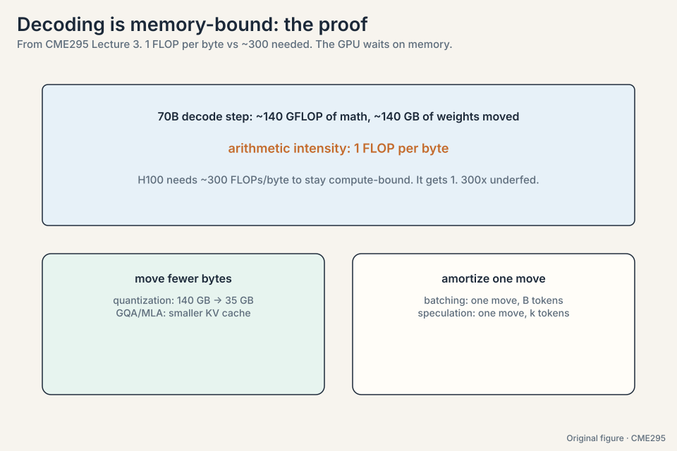
Subchapter: paged attention block math
The toy: a request reserves 256 contiguous slots but uses 137. 119 slots (46%) sit idle inside the reservation. Across 1,000 requests the waste is 119K slots of KV memory doing nothing. Paging splits the cache into fixed blocks of 16 tokens: the request holds 9 blocks (144 slots) for 137 tokens, wasting 7 slots (5%). The block table maps logical positions to physical blocks, like OS virtual memory. Fragmentation falls from ~46% to ~5%. Throughput rises because the same GPU memory now holds ~40% more concurrent requests. The cost: one indirection per access. The paper’s setting uses block size 16. Larger blocks waste more per request. Smaller blocks add table overhead.
When the prefix is almost but not quite shared. The cache keys on exact prefix match: change one system-prompt word and the whole cache misses, but you paid the complexity of routing for the cache. Worse, teams freeze prompts to preserve hit rates and stop improving them: the cache becomes a tax on iteration. The decision rule: cache prefixes that are truly static (system prompts, tool definitions, few-shot blocks) and keep the dynamic parts (user input, retrieved chunks) at the end where they do not break the prefix. Providers price cached input tokens around 1/10 of uncached. A 10K-token system prompt cached across 1,000 requests: 10M tokens at 1/10 price. The savings are real exactly when the prefix is long and the request count is high.
Speculative decoding (101:37). A small draft model proposes k tokens fast. The large target model verifies all k in one forward pass, accepting the good prefix and resampling at the first rejection. The toy: k = 3 drafts, the target accepts 2, rejects the third, and resamples it. Two memory moves produced 3 tokens instead of 3 moves for 3 tokens. Verification moves the weights once for k tokens, so accepted drafts are nearly free speed.
Multi-token prediction (106:43). Train the model to emit several tokens per forward pass. Same idea as speculation, but learned into the model instead of bolted on.
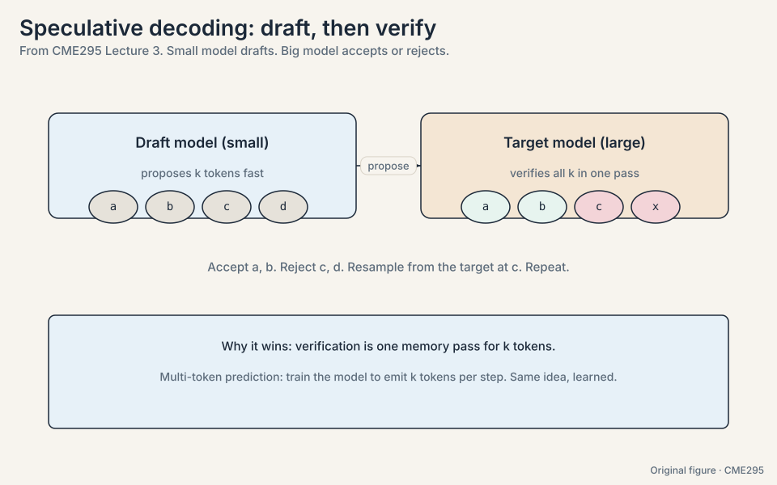
Each forward pass streams the full weight matrices from HBM to the chip to produce one token. The arithmetic per byte moved is tiny. So the bottleneck is memory bandwidth, not FLOPS. Every efficiency trick here either moves less (KV cache, MLA, GQA) or amortizes the move over more tokens (speculative decoding, multi-token prediction). When the draft model is wrong too often. Rejected drafts waste the verification pass, and resampling adds latency. The draft must be close enough to the target that acceptance rates stay high.
Mapping back: one bottleneck rules serving
| Problem | Trick | What it saves |
|---|---|---|
| Every token runs every FFN | Sparse MoE | Compute: only top-1/2 experts run per token |
| Dense FFN per token per layer | Switch Transformer | Scale: 1.6T parameters at top-1 cost |
| Probabilities, not tokens | Decoding strategies | The right bias per task: greedy for facts, sampling for variety |
| Flat or spiky outputs | Temperature | Reshape exp(z_i / T): 0.5 spiky, 1 trained, 2 flat |
| Free text where JSON is needed | Guided decoding | Validity by construction: invalid tokens get 0 |
| Retraining to steer | Prompting | Zero/few-shot, CoT, self-consistency: no weights change |
| Recompute per step | KV cache | One row appended per step instead of O(t) recompute |
| Cache fragmentation | Paged attention | Fixed blocks: no idle slots inside reservations |
| Cache too big | MLA | Latent compression instead of full heads |
| One token per memory move | Speculative decoding, multi-token prediction | Amortize: k tokens per weight move |
The honest price
Every trick trades something. Sparse MoE buys capacity and pays in routing collapse risk and expert-parallel complexity. Beam search buys quality and pays B times the compute. Sampling buys diversity and pays in reproducibility. Guided decoding buys validity and pays in expressiveness: the model cannot say what the grammar forbids. Prompt caching buys speed and pays in prefix rigidity. Speculative decoding buys speed and pays a draft model plus wasted verification on rejections. The memory-bandwidth bottleneck is a fact of physics. The tricks are ways to spend less of it per token.
Recap: the whole lesson on one screen
The story in eight steps. Each step answers the one before it.
- Large means three magnitudes. Next-token probabilities, with hundreds of billions of parameters and up to tens of trillions of tokens. Over 90% of LLMs are decoder-only.
- Route tokens to specialists. y-hat = sum of g_i * E_i(x). Sparse top-1/2 routing per token per layer. Collapse is the failure mode: the router converges to one expert. Auxiliary loss plus noisy gating is the fix.
- Decoding turns probabilities into tokens. Greedy (argmax), beam (B hypotheses with length norm), sampling (the only randomness), top-K (cut the tail), top-P (adapt the set to the distribution).
- Temperature reshapes. exp(z_i / T). On logits [3,2,1]: T = 0.5 gives [0.87, 0.12, 0.02]. T = 1 gives [0.67, 0.24, 0.09]. T = 2 gives [0.51, 0.31, 0.19]. T = 0 is deterministic in theory, not always on GPUs.
- Constrain when output must parse. Grammar plus mask: invalid tokens get zero probability. JSON comes out valid by construction.
- Prompting is programming in text. Context, instructions, inputs, constraints. Zero-shot, few-shot, chain-of-thought, self-consistency (5 paths, majority wins). Beware context rot. Cache repeated prefixes.
- Decoding is memory-bound. 70B at 2 bytes: 140 GB moved per token. KV cache appends one row per step. Paging kills fragmentation. MLA compresses.
- Amortize the memory move. Speculative decoding: draft k, verify in one pass, keep the accepted prefix. Multi-token prediction learns it into the model.
Go deeper
- Lecture 3 recording: https://www.youtube.com/watch?v=Q5baLehv5So
- Speculative decoding, draft to verify (Devsplainers): https://www.youtube.com/watch?v=YFwsSaWerDY
- Fedus et al., Switch Transformers: https://arxiv.org/abs/2101.03961
- Kwon et al., PagedAttention: https://arxiv.org/abs/2309.06180
- Leviathan et al., speculative decoding: https://arxiv.org/abs/2211.17192
Official sources and further reading
Official: - Lecture 3 recording (YouTube): timestamped above. - Lecture 3 slides (PDF), CME295 Autumn 2025. - Fedus et al., “Switch Transformers” (2021): - top-1 MoE at 1.6T parameters. - Kwon et al., “PagedAttention” (2023): - paged KV cache management.
Further reading: - Holtzman et al., “The Curious Case of Neural Text Degeneration” (2019): nucleus (top-P) sampling. - DeepSeek-V2 paper (2024): multi-head latent attention. - Leviathan et al., “Fast Inference from Transformers via Speculative Decoding” (2023).
Caveats from these sources. The “eight copies per block” figure is the speaker’s live estimate [uncertain]. The context-rot paper is unnamed in the transcript [uncertain]. The PagedAttention block size (~16) is hedged by the speaker [uncertain]. MoE load-balancing recipes vary by lab. The lecture gives the standard one.
Connections to the other courses
- CS336 L01: the token chip and tokenization. Every decoding decision here operates on its IDs.
- CS336 L04: MoE in depth, plus linear attention as an alternative efficiency story.
- CS336 L10/L18: inference systems: KV cache management, batching, and serving at scale.
- CS336 L02: resource accounting: why memory bandwidth dominates decoding cost.
- CME295 L02: GQA/MQA, the architectural side of the KV cache story.
Sources
- VIDEOLecture 3 recording (YouTube)
- SLIDESLecture 3 slides (PDF), CME295 Autumn 2025
- PAPERFedus et al., Switch Transformers: Scaling to Trillion Parameter Models (2021)
- PAPERKwon et al., Efficient Memory Management for Large Language Model Serving with PagedAttention (2023)